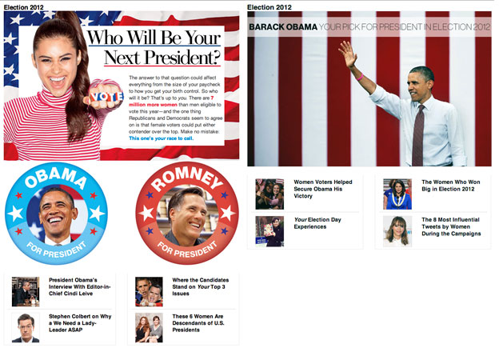

Election 2012
Meredith spearheaded all Election 2012 coverage for Glamour magazine on the newly-launched Inspired channel, including both political conventions, debates, and on-location reporting, as the lead blogger for The Conversation.
She also directed all specially-designed and formatted content, including Glamour Editor-in-Chief Cindi Leive's extended interview with President Barack Obama, from the November 2012 Election Special for online publication.
Custom Election 2012 hub page, pre- and post-Election Day:
See all Election 2012 content.
Selected Election 2012 blog posts:
Victory announcements: Obama, Baldwin, Donnelly, Fischer, McCaskill, Warren
- More Women to Celebrate in Election 2012! Plus, 20 Ladies Now in the Senate, and Other Milestones From November 6
- Inspired: The Conversation · November 7, 2012
- 4 Ways Election Day Could Be Absolutely, Completely, Out-of-This-World Crazy Today
- Inspired: The Conversation · November 6, 2012
- GOP Senate Candidate Gets Tripped Up In Comments About Rape Pregnancies; Romney Distances Himself
- Inspired: The Conversation · October 24, 2012
- Final Presidential Debate: Americans Abroad Talk Foreign Policy at Tonight's Face-Off
- Inspired: The Conversation · October 22, 2012
- Fox News's Dana Perino and Andrea Tantaros Give Conservative Perspectives on the Women's Fair Pay Debate Question
- Inspired: The Conversation · October 18, 2012
- 6 Things to Know About Candy Crowley, Including Why She's Causing So Much Controversy Before Tonight's Presidential Debate
- October 16, 2012
- Tonight's VP Debate: 2 Female Congressional Candidates on What to Watch for From Both Sides
- October 11, 2012
- Marsha Blackburn, Maggie Hassan, and More Women in Politics React to the First Presidential Debate (We Have Exclusive Quotes!)
- October 4, 2012